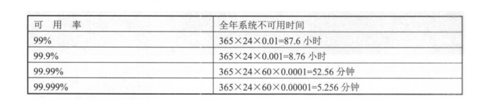

Contents
4.1. 01.高可用集群之MHA¶
4.1.1. MySQL高可用集群¶
负载均衡：后端服务器没有状态，可任意分配，同时工作，增加负载和吞吐量 高可用性：后端服务器有状态，一主一备，一个工作一个等待接管服务，保证系统可用性 高可用100%是不存在的，生产中努力达到99.99%，即全年业务不可用时间大概只有52分钟

1）最常用的基于主从复制的方案：MHA和MM+Keepalived
2）基于Galera协议的Percona XtraDB Cluster(简称PXC)实现真正意义上的同步复制
3）基于中间件Proxy，如ProxySQL
4.1.2. MHA¶
MHA，即MasterHigh Availability Manager and Tools for MySQL，是采用Perl编写的一个脚本管理工具，适用于MySQL Replication环境，目的在于维护master主库的高可用性，是自动的master故障转移和slave提升软件包，基于标准的MySQL复制(异步/半同步)
MHA在生产环境使得得比较多，包括两个组成部分：MHA Manager管理节点和MHA Node数据节点
项目地址：
https://github.com/yoshinorim/mha4mysql-manager
https://github.com/yoshinorim/mha4mysql-node
4.1.3. MHA原理及优缺点¶
MHA Manager管理节点可以单独部署在一台独立服务器上管理多个master-slave集群，也可以部署在一台slave上。 MHA Manager探测集群中的node节点，当发现master故障后，可以自动将具有最新数据的slave提升为新的master，然后将所有其他slave导向新的master上，整个故障转移过程对程序是透明的 MHA node数据节点可以运行在每台MySQL服务器上，它通过监控具备解析和清理logs功能的脚本来加快故障转移
原理：¶
MHA目的在于维持MySQL Replication中master库的高可用性，最大特点是可以修复多个slave之间的差异日志，最终使所有slave保持数据一致，然后从中选择一个充当新的master，并将其他slave指向它。当master故障时，可以通过对比slave之间IO thread读取主库binlog的pos号，选取最接近的slave作为备胎。其他从库可以通过与备选主库对比生成差异的中继日志，在备选主库上应用从原来master保存的binlog，同时将备选主库提升为master。最后在其他slave上应用相应的差异中继日志并从新的master开始复制
4.1.4. MHA工具包功能¶
1、Manager管理工具
masterha_check_ssh，检查mha的ssh配置
masterha_check_repl，检查数据库主从复制功能
masterha_manager，启动mha服务
masterha_check_status，查看当前mha运行状态
masterha_master_monitor，监测master是否宕机
masterha_master_switch，控制故障转移(自动或手动)
masterha_conf_host，添加或删除配置的server信息
2、Node数据节点工具
save_binary_logs，保存和复制binlog日志
apply_diff_replay_logs，识别差异的中继日志事件并应用于其他slave
filter_mysqlbinlog，去除不必要的rollback事件(mha已不再使用这个工具)
purge_relay_logs，清除中继日志(不会阻塞SQL线程)
部署实现过程在此省略，可自行百度。